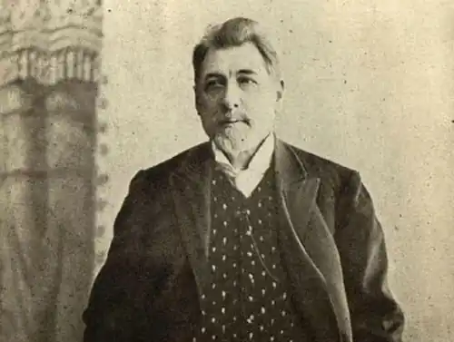
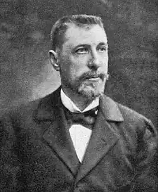

Здавалося, ще до свого народження він був налаштований на поліфонічне життя в напруженій роботі над собою. Він рано відчув свої гуманітарно спрямовані інтереси, органічно потребував внутрішніх змін та азартно вбирав у себе дві макросфери — буття соціуму і поступ науки.
Дмитро Миколайович Овсянико-Куликовський народився 4 лютого 1853 року в Каховці, в родині заможного та впливового дворянина. Свою генеалогію по лінії Куликовських він виводив від запорізьких козаків, які з південних степів через Молдавію, Слобожанщину прийшли у Таврію, де належали до найзаможніших людей регіону. "Ускладнення" родинного прізвища відбулося за таких обставин. Його прадід — Димитрій Матвійович Куликовський, латифундист і неодружений чоловік — закохався в дружину чиновника на прізвище Овсянико. І, закохавшись, відбив її у чоловіка, причому розлучення Анастасія не оформляла. Коли в неї з Димитрієм Матвійовичем народився син, він як позашлюбний одержав прізвище матері. Невдовзі Анастасії не стало, й тоді Димитрій Матвійович добився, щоб за сином було закріплене прізвище Овсянико-Куликовський, що робило його законним спадкоємцем земельних володінь родини.
Із 1862 року для Дмитра розпочався процес навчання. Спочатку з ним займаються домашні вчителі. У свої дитячо-підліткові роки він захоплюється поезією та прозою, без особливих зусиль запам’ятовує чималі поетичні тексти, серед улюблених поетів — Майков і Лермонтов. Проте його натура потребує активнішого самовираження, і коли йому було дванадцять-тринадцять років, він працює над твором, у якому розмірковує про Сократа й питання релігії, моралі, безсмертя людської душі, сміливо потрактовуючи філософа як прообраз Христа. 1866 року Дмитро вступає одразу до третього класу Рішельєвської гімназії в Одесі. Там він відчув справжній інтерес до предметів гуманітарного циклу і своє органічне "нетяжіння" до математики. Наступного року через сімейні обставини — після смерті Дмитрової матері його батько одружується з донькою губернатора Таврійської губернії Григорія Васильовича Жуковського — він уже навчається в сімферопольській гімназії. Там, у 4 класі, знову виникають складнощі з математикою. І тут спрацьовує те, що було закладено в ньому природою — самовіддане прагнення до ефективної роботи над собою. Він чітко вербалізує мету — досягти в гімназійному курсі алгебри й геометрії відмінних оцінок. Дмитро відмовляє собі в художніх творах та розвагах і стійко займається математичними предметами. Завдяки своїй копіткій праці 4 клас гімназії він закінчує "круглим" відмінником. Посилені заняття математикою привели Дмитра Овсянико-Куликовського до висновку: його інтереси — це насамперед мови і література. Він зосереджує на них надзвичайні зусилля, взявшись за вивчення давньогрецької мови, яка не входила тоді до навчальних курсів гімназійної освіти. Життєвий режим було безкомпромісно підпорядковано цій справі, про що в останні роки життя Овсянико-Куликовський згадував: "Перед тем как идти в гимназию, за кофеем, я прочитывал страницу греческого текста, выписывал слова в тетрадку и брал ее с собою, чтобы на уроках, тайком, держа под партой, заучить слова. Когда, бывало, меня брали в театр, заветная тетрадка была со мною, и я углублялся в нее в антрактах, а иной раз случалось разделять внимание между нею и тем, что происходило на сцене". Фанатизм у будь-яких проявах не був йому властивим, але в його натурі нуртувало прагнення зосередитися на тому, що його захоплювало і не відпускало. Самостійне оволодіння давньогрецькою дало йому змогу в гімназійний період читати в оригіналі Фукідіда, Софокла, Ксенофонта й "Анабаcис", де оповідалося про походи Александра Македонського. Свій філологічний розвиток Дмитро доповнював ознайомленням з творами, що були написані латиною та виходили за межі програми класичної гімназії. Так йому виявилося до снаги прочитати "Про старість" Цицерона і комедії Теренція. Крім цього, знаходив час для Писарева, Бєлінського, Добролюбова, Михайловського. У ньому неухильно почав здійснюватися Практикум Інтуїтивного Розвитку, що на значний період визначило його запити і спосіб організації свого життя. Розвиток зазвичай не буває безпроблемним — і Дмитро Овсянико-Куликовський на своєму досвіді пережив цю нехитру максиму. Перший курс Петербурзького університету, куди він вступив 1871 року, закінчити йому не вдалося. Тоді, впродовж 1870-1872 років, він жив характерним життям молодої людини: закохувався, проводив час у компаніях, на вечірках та особливо не дбав про завтрашній день. Закінчилося все тим, що іспиту з латини він не склав і його залишили на першому курсі. Проте прагнення до розвитку продовжувало в ньому жити, й в Одесі, куди 1873 року після тифу він переїжджає за порадами лікарів і продовжує навчання в Новоросійському університеті, відбувається його повернення до системної роботи над собою. У студентські й пізніші роки Овсянико-Куликовський намагається охопити якомога ширшу сферу знань. Він вивчає санскрит, церковнослов’янську, давньоєврейську, готську і давньофранцузьку мови. Він ретельно опрацьовує праці з філософії, соціології, політології (передусім поширених тоді теорій соціалізму), політичної економії (подолав "Капітал" Маркса), а також із культурології, ботаніки, міфології, астрономії, психології, психіатрії та психопатології, навіть із криміналістики. Він заглиблюється у проблеми селянських громад, релігійного розколу, сектантства, українського національного руху. Його, неначе магнітом, тягнуло до актуальних інформаційних блоків, де зрощувалися складнощі соціумного життя і багатоканальні наукові пошуки. Практикум інтуїтивного розвитку начебто непомітно, але надійно переходив в іншу якість — у Культуру Універсального Розвою. Закінчивши 1876-го Новоросійський університет, у 1877 — 1882 роках Овсянико-Куликовський мешкає за кордоном — у Празі, Женеві й Парижі. Там він поєднує інтерес до широких соціополітичних питань з підготовкою до наукової кар’єри. А вона в нього складалася гіпердинамічно. 1882 року в Московському університеті він захищає наукову розробку на звання приват-доцента з індоіранської філології, що надає йому можливість викладати в Новоросійському університеті. 1885-го в Харківському університеті він успішно захищає магістерську дисертацію на межі культурології та мовознавства. 1887-го — знову захист, цього разу в Новоросійському університеті, де він представив докторську дисертацію з проблем лінгвістики, міфології та релігії. Але й після цього науковий розвиток не припинився. Свій мозок він сприймав як пізнавальний банк, здатний безмежно поповнюватися. Розширення інформаційної свободи ставало для нього життєвою необхідністю. Безодня простору психіки та психології якнайкраще підходила для цього. Культура універсального розвитку не могла не перейти на вищий щабель — на щабель Філософії Безкінечного Розвою Новий виток розпочинається в Харківському університеті, куди тридцятип’ятирічний доктор Овсянико-Куликовський, після того як рік пропрацював екстраординарним професором у Казанському університеті, був переведений 1888 року і де він залишався професором до 1905-го. І виток цей виявився доволі несподіваним, що засвідчив критик і публіцист Аркадій Горнфельд, який у ті часи навчався в Харківському університеті. "Как-то в аудитории Потебни в течение нескольких лекций подряд я стал замечать необычного слушателя, — згадував він. — ...Много старше всех нас, он все же казался очень молодым, и я несколько удивился, когда, спросив знакомых филологов, кто этот посетитель, узнал, что это новый профессор по кафедре сравнительного языкознания и санскрита Овсянико-Куликовский..." Прослухавши протягом 1889-1890 рр. курс лекцій Олександра Потебні з теорії словесності й синтаксису, простудіювавши його праці "Мысль и язык", "Из записок по русской грамматике", він у сформованому віці переформатовує сферу своїх інтересів та починає досліджувати психологію мови, мислення і художньої творчості, розвиваючи концепції Потебні. Віднині справою життя для нього стає літературознавство, хоча зберігається й інтерес до лінгвістичної проблематики. Кардинальна зміна пріоритетів була зумовлена не тільки науковою поставою Олександра Потебні, а й потребою отримувати дедалі більше знань. Свій мозок він сприймав як пізнавальний банк, здатний безмежно поповнюватися. Розширення інформаційної свободи ставало для нього життєвою необхідністю. Безодня простору психіки та психології якнайкраще підходила для цього. Культура універсального розвитку не могла не перейти на вищий щабель — на щабель Філософії Безкінечного Розвою. Виходячи з психологічного методу О. Потебні, він іде далі — у напрямку психоаналізу як способу тлумачення художніх творів. Овсянико-Куликовський аналізує вплив психічної організації митця на його творчість. У цьому ключі він друкує праці: "Этюды о творчестве И. С. Тургенева" (1896), "Л. Н. Толстой как художник" (1899), "Лев Николаевич Толстой" (1908), "А. С. Пушкин" (1909), "Этюды о творчестве А. П. Чехова" (1909), "Поэзия Генриха Гейне" (1909), де виявляє відображення в прозових і поетичних творах психічної сутності письменника. У монографіях "Н. В. Гоголь" (1902) і "Гоголь в его произведениях" (1909) Овсянико-Куликовський розглянув творчість і психічний комплекс художника, якого зараховував до явищ світового масштабу. У них він, з одного боку, виокремлював "ослепительный свет художественного гения Гоголя", а з іншого — розвивав тезу, що Гоголь "смотрел на Божий мир сквозь призму своих настроений, большей частью очень сложных и психологически темных, и видел ярко и в увеличенном масштабе преимущественно все темное, мелкое, пошлое, узкое в человеке". Напружений розвиток майже завжди знаходить своє виявлення в соціумі. Так сталося і з Овсянико-Куликовським. 1907 року його обирають почесним академіком Санкт-Петербурзької академії наук, а з 1912-го — він серед редакторів престижного журналу "Вестник Европы". У період революційних потрясінь Дмитро Овсянико-Куликовський перебирається до Одеси. Він оселяється на дачі біля Чорного моря й підводить підсумки свого життя, працюючи над "Воспоминаниями". У них він відверто розповідає про свої захоплення, уподобання, помилки, зустрічі та про той час, що йому було відведено долею. Там, в Одесі, 9 жовтня 1920 року його і не стало. Він вірив у те, що історично людство, попри всі драматичні колізії свого існування, розвивається в напрямку вдосконалення і що гуманістичний розвиток соціуму можливий лише на національній основі. "Человечество идет не к национальному обезличению, а к всестороннему развитию национального духа на почве общего культурного и умственного развития..." — таким був його цивілізаційний прогноз.